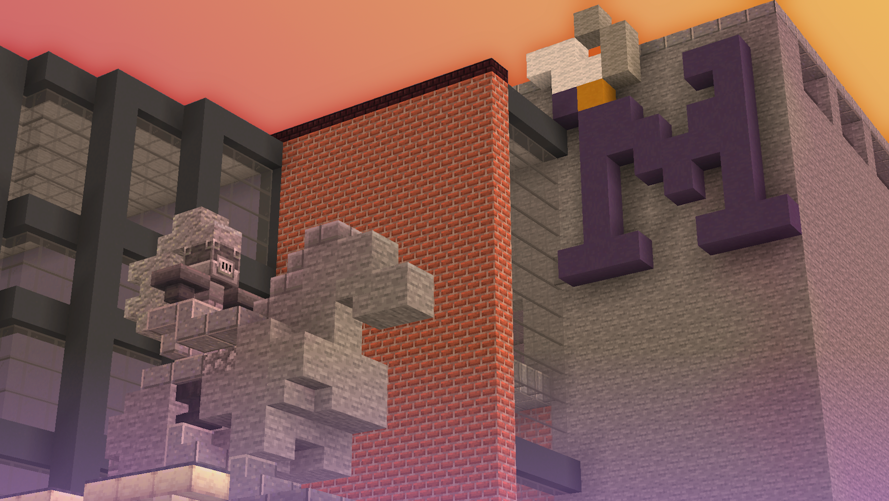
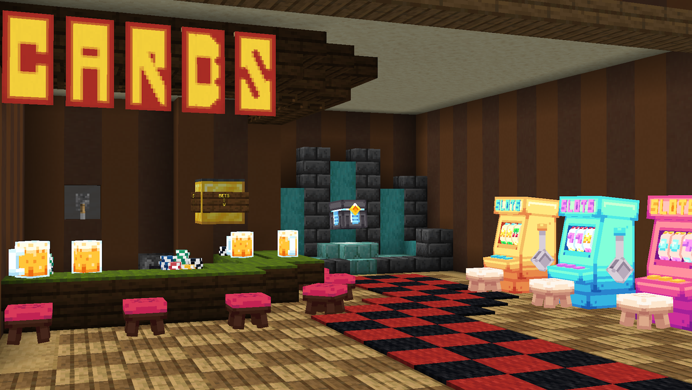
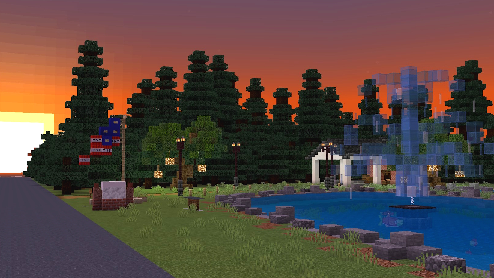

What is Minecraft Prom?
 Minecraft Prom is a biannual event in which players fight in a gauntlet of minigames for the titles of Prom King, Prom Queen, and Court Jester. The event takes place in a Minecraft replica of Mascoutah High School. The first event took place in April 2022. Since then, we've hosted seven events with over 30 unique players.
Minigames
Compete in an array of minigames to prove yourself worthy of Prom Court! Play your opponents in classic games such as Connect 4, Tic-Tac-Toe, and Spleef, followed by the final game — Dodgeball. Winning Prom Court will also award you 32 shiny diamonds.
Casino*

Every player receives 16 diamonds upon joining. One of the things you can do with your currency is gamble!
Bet your diamonds on slots, blackjack, or open loot boxes full of cosmetics in the Casino!
*Note: MC Prom does not encourage gambling real-world currency.
Fishing
 Out of diamonds from gambling? Catching and selling fish is a great way to calm down and earn diamonds responsibly. Keep an eye out for the super rare golden fish, which sells for a much higher price than the other fish.